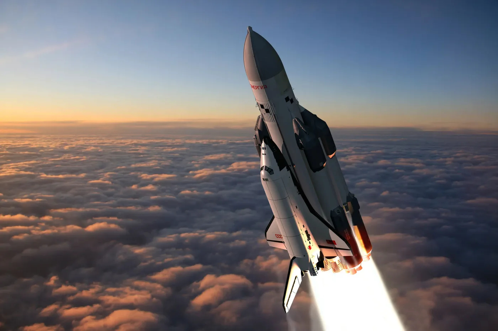

Буран
«Бура́н» — советский орбитальный корабль-ракетоплан многоразовой транспортной космической системы (МТКС), созданный в рамках программы «Энергия — Буран».
Первый и единственный космический полёт «Буран» совершил 15 ноября 1988 года в автоматическом режиме, без экипажа на борту; больше его не запускали («Буран» был рассчитан на 100 полётов в космос[1]:2). Ряд технических решений, полученных при создании «Бурана», был использован в российской и зарубежной ракетно-космической технике[2].
Назначение
«Буран» предназначался для:
- выведения на орбиты, обслуживания на них и возвращения на Землю космических аппаратов, космонавтов и грузов;
- проведения военно-прикладных исследований и экспериментов по обеспечению создания больших космических систем с использованием оружия на давно известных и недавно изученных физических принципах;
- решения целевых задач в интересах народного хозяйства, науки и обороны;
- комплексного противодействия мероприятиям вероятного противника по расширению использования космического пространства в военных целях[3].
Как военно-политическая система
По мнению зарубежных специалистов «Буран» был ответом на аналогичный американский проект «Спейс шаттл» и задумывался как военная система[4], которая, впрочем, была ответом на, как тогда считали, планировавшееся применение в военных целях американских шаттлов[5].
Программа имеет свою предысторию[6]:
В 1972 г. Никсон объявил, что в США начинает разрабатываться программа «Space Shuttle». Она была объявлена как национальная, рассчитанная на 60 пусков челнока в год, предполагалось создать 4 таких корабля; затраты на программу планировались в 5 миллиардов 150 миллионов долларов в ценах 1971 г.
Челнок выводил на околоземную орбиту 29,5 т и мог спускать с орбиты груз до 14,5 т. Вес, выводимый на орбиту при помощи одноразовых носителей в Америке, даже не достигал 150 т/год, а тут задумывалось в 12 раз больше; ничего с орбиты не спускалось, а тут предполагалось возвращать 820 т/год… Это была не просто программа создания какой-то космической системы под девизом снижения затрат на транспортные расходы (наши, нашего института проработки показали, что никакого снижения фактически не будет наблюдаться), она имела явное целевое военное назначение.
— Директор Центрального НИИ машиностроения Ю. А. Мозжорин
Многоразовые космические системы имели в СССР как сильных сторонников, так и авторитетных противников. Желая окончательно определиться с МКС, ГУКОС решил выбрать авторитетного арбитра в споре военных с промышленностью, поручив головному институту Минобороны по военному космосу (ЦНИИ 50) провести научно-исследовательскую работу (НИР) по обоснованию необходимости МКС для решения задач по обороноспособности страны. Но и это не внесло ясности, так как генерал Мельников, руководивший этим институтом, решив подстраховаться, выпустил два «отчёта»: один — в пользу создания МКС, другой — против.
Генерал Мельников, руководивший этим институтом, решив подстраховаться, выпустил два «отчёта»: один — в пользу создания МКС, другой — против.
В конце концов оба этих отчёта, обросшие многочисленными авторитетными «Согласовано» и «Утверждаю», встретились в самом неподходящем месте — на столе Д. Ф. Устинова. Раздражённый результатами «арбитража», Устинов позвонил Глушко и попросил ввести его в курс дела, представив подробную информацию по вариантам МКС, но Глушко неожиданно отправил на встречу с секретарём ЦК КПСС, кандидатом в члены Политбюро, вместо себя — Генерального конструктора — своего сотрудника, и. о. начальника 162 отдела Валерия Бурдакова.
Приехав в кабинет Устинова на Старой площади, Бурдаков стал отвечать на вопросы секретаря ЦК. Устинова интересовали все подробности: зачем нужна МКС, какой она может быть, что нам для этого нужно, зачем в США создают свой «Шаттл», чем это нам грозит. Как впоследствии вспоминал Валерий Павлович, Устинова интересовали в первую очередь военные возможности МКС, и он представил Д. Ф. Устинову своё видение использования орбитальных челноков как возм
Перспективы МКС, представленные Бурдаковым, настолько глубоко взволновали и заинтересовали Д. Ф. Устинова, что он в кратчайший срок подготовил решение, которое было обсуждено в Политбюро, утверждено и подписано Л. И. Брежневым[8][9], а тема многоразовой космической системы получила максимальный приоритет среди всех космических программ в партийно-государственном руководстве и ВПК.